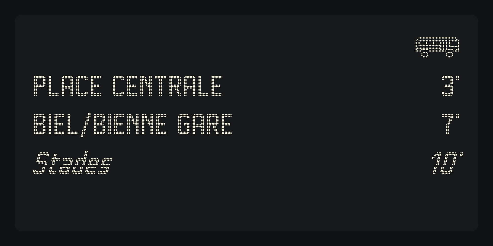

Bussard is a dot-matrix typeface inspired by public transport and LED displays: the departure boards at bus stops and stations, where every letter is made of small points of light.

Each letter is drawn point by point on a strict grid: 14 points for the capitals, 10 for the lowercase, with strokes two points wide and corners rounded by a single point. The points never touch, so the text keeps the texture of a real LED panel at large sizes.
The family has six weights, from Thin to Black. Like on a real display, a heavier weight means more points: strokes are one point wide in Thin and Light, two in Regular and Medium, three in Bold and Black. In between, the size of the points changes: smaller in Thin, larger in Medium and Black.
Every weight has an Italic that leans at 12 degrees and carries a regular glitch: the lower half of every letter drops by one point and slides one point to the left, like a tired display at the end of a long day.
All figures share the same width, so times and minutes stay aligned from one line to the next, just like on a timetable. Kerning moves letters by whole points only, so every point stays on the grid. Bussard also includes a small bus pictogram (U+1F68C) drawn on the same grid.
Bussard covers the GF Latin Core character set and is designed by Jonathan Kern for LaFleurStudio.